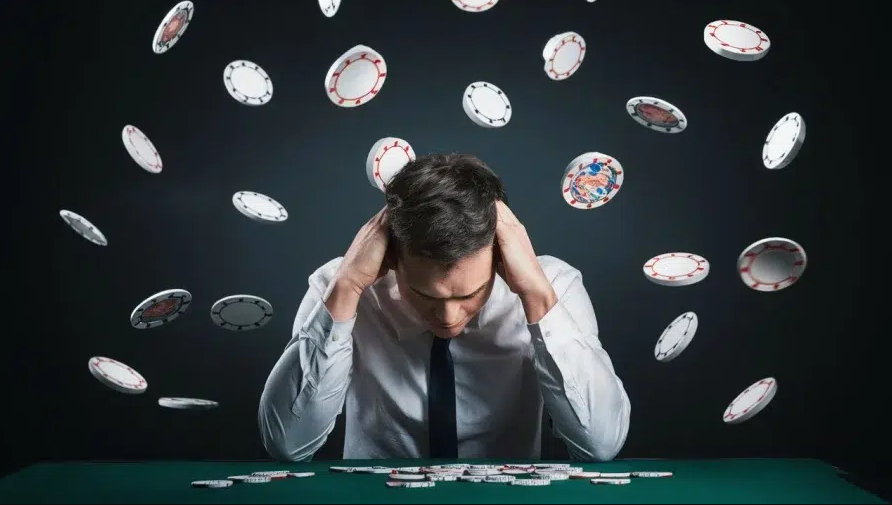
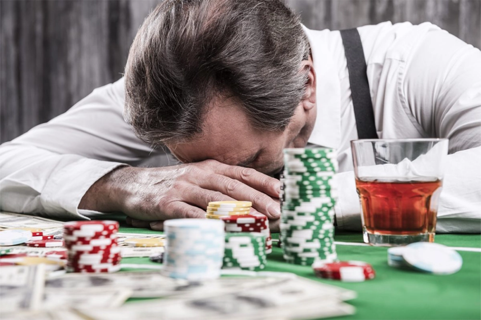

Risks of Gambling
Gambling can be fun when done responsibly, but it carries serious risks. Here are some of the main dangers:
-
1) Financial problems: Losing more money than you can afford can cause serious financial stress.
2) Debt accumulation: Gambling to recover losses can lead to increasing debt.
3) Stress and anxiety: Constant worry about losses can impact your mental health.
4) Family conflicts: Gambling problems often cause problems in your relationships with family and friends.
5) Addiction habits: Repeated gambling can lead to compulsive behavior and loss of control.
Understanding these risks can help you make informed decisions and stay in control of your choices.

